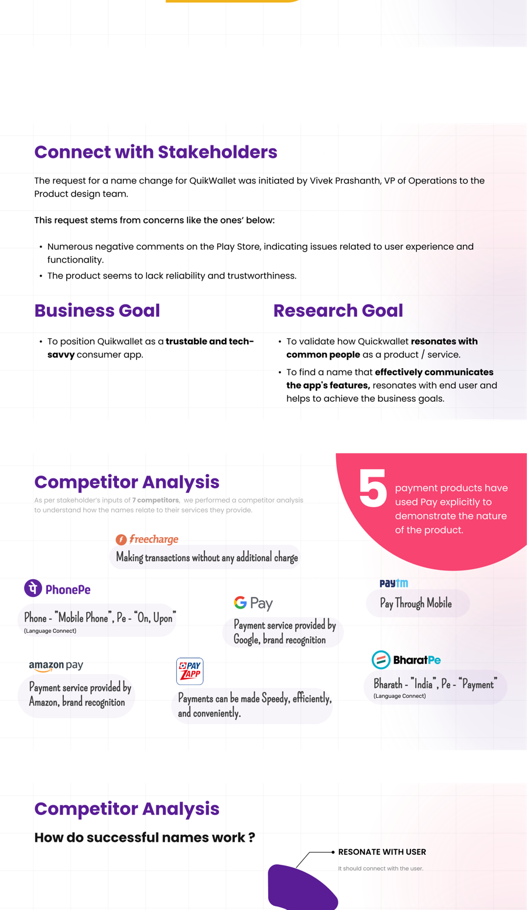
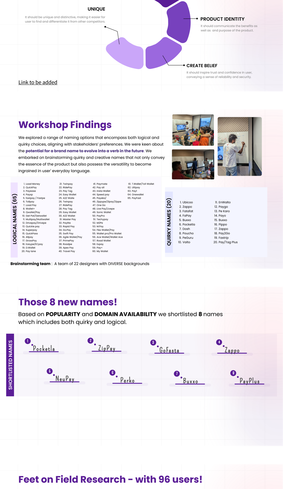
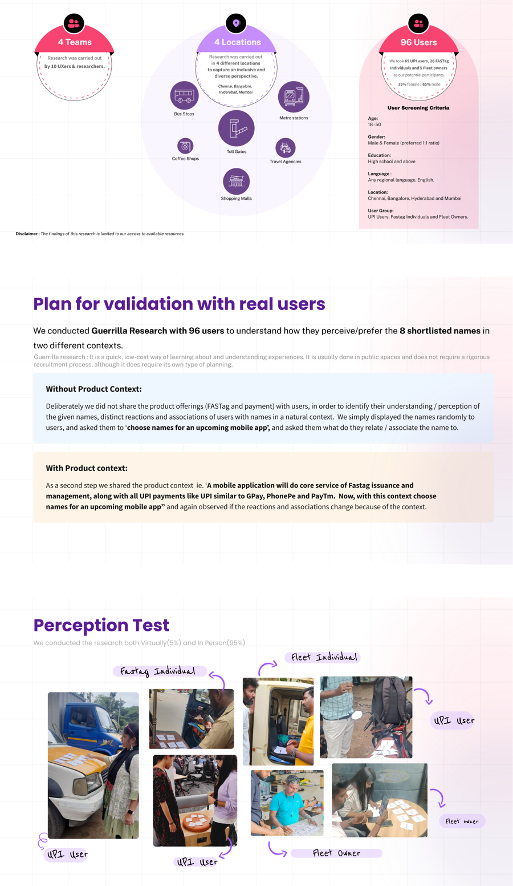
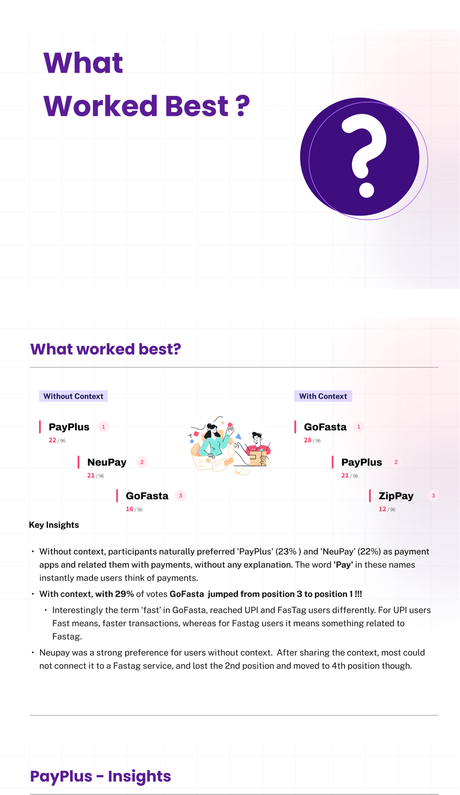
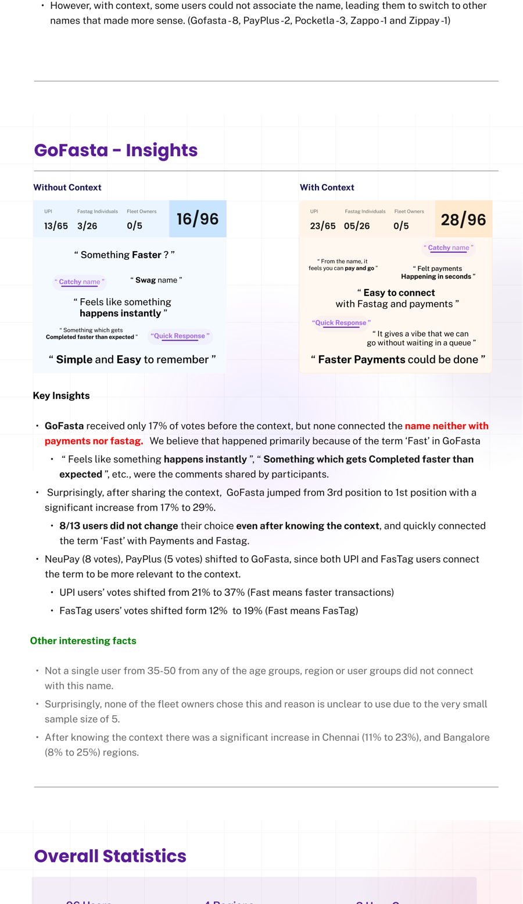
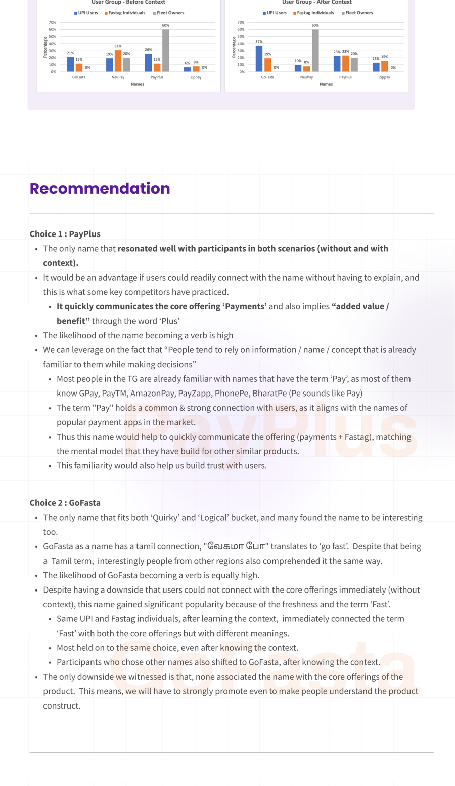

This isn't a product design case study — it's a naming research one. The deliverable wasn't a screen, it was a word, and the process for finding it looked completely different.
Ayyappan RajendiranUX Researcher, LivQuik
Fig 01 — What QuikWallet is, and the research plan built to rename it
QuikWallet is LivQuik's mobile app combining FASTag and UPI payments into one wallet, with a particular focus on FASTag and meal card management. The name itself became the problem: Play Store reviews kept pointing at trust and reliability, not features, and the product team traced part of that back to what the name itself was — or wasn't — communicating.
The Project
The request came from a named stakeholder, Vivek Prashanth, VP of Operations, in response to a concrete pattern: numerous negative Play Store comments about user experience and functionality, and a name that didn't seem to signal reliability or trust on its own. That produced two distinct goals worth keeping separate — a business goal (position QuikWallet as a trustworthy, tech-savvy consumer app) and a research goal (validate how the product resonates with everyday people, and find a name that actually communicates what it does).
Because the deliverable here was a name, not a flow or a screen, the process that got there looked like naming research rather than product design — five steps, each producing a real, falsifiable input into the next.
Step 01
Connect with Stakeholders
Separating why the business wants this from what research needs to prove
A rename request driven by App Store complaints could easily turn into guessing at what "sounds trustworthy." Splitting the business goal from the research goal up front kept the project answerable instead of aesthetic.
Business Goal
Position QuikWallet as a trustworthy and tech-savvy consumer app.
Research Goal
Validate how QuikWallet resonates with common people as a product, and find a name that communicates the app's features, resonates with end users, and helps achieve the business goal.
Research objective: identify a name that resonates with common people as a payments product, both with and without knowing what QuikWallet does. Hypothesis: names already using recognized payment-category language ("Pay") would outperform more abstract or quirky names — worth testing directly rather than assuming.
The takeaway"Make it sound more trustworthy" isn't testable. "Find a name common people associate with payments and trust" is — that reframing is what made the rest of the project possible.
Step 02
Competitor Analysis
Almost every successful payments app names itself literally
Before generating names, I looked at what already worked in the category — as stakeholders had specifically asked for a competitor review of seven products.
Five of seven — PhonePe, Google Pay, Paytm, Amazon Pay, and BharatPe — use "Pay" explicitly to describe what they do. FreeCharge and PayZapp lean on speed and value instead. The pattern held a clear lesson: successful names in this category tend to resonate immediately with the user, stay unique enough to differentiate, communicate product identity, and create belief — trust and reliability signaled by the name itself, not just the brand behind it.

Fig 02 — What the category's naming conventions already told us before we invented anything new
The takeaway"Pay" isn't a lazy name choice in this category — it's the dominant, proven pattern. Any new name would have to justify deviating from it, not just be different for its own sake.
Step 03
Workshop
85 names from 22 people before a single user was asked anything
Rather than a small team guessing at a handful of options, I ran an in-person brainstorm wide enough to surface both the obvious names and the ones nobody would think of alone.
A team of 22 designers with diverse backgrounds generated 65 "logical" names — direct, descriptive, payments-adjacent — and 20 "quirky" names built for distinctiveness over immediate clarity. Deliberately exploring both ends of that spectrum meant the shortlist wouldn't just default to the safest option.

Fig 03 — The actual brainstorm, and the 8 names it narrowed down to
From 85 candidates, popularity and domain availability narrowed the field to eight: Pocketla, ZipPay, GoFasta, Zappo, NeuPay, Perko, Buxxo, and PayPlus — four leaning logical, four leaning quirky, ready to be tested against real people rather than debated further in a room.
The takeawayNaming by committee consensus tends to converge on the safest option early. Generating 85 names before narrowing anything is what kept a name like GoFasta in contention at all.
Step 04
Field Validation
Testing names on the street, with and without knowing what they're for
The most important methodological decision in this whole project: testing every name twice, once cold and once with product context, because the two conditions surfaced completely different winners.
Four teams of researchers ran guerrilla research with 96 real users across four cities — Chennai, Bengaluru, Hyderabad, and Mumbai — at bus stops, metro stations, toll gates, coffee shops, travel agencies, and shopping malls, screening specifically for UPI users, FASTag individuals, and fleet owners.

Fig 04 — 96 real people, tested in the field, not in a conference room
Without context, participants were shown the eight names cold and asked what app they'd be for. With context, they were told exactly what the product does — FASTag and UPI management — and asked again. The shift between those two answers was the actual finding.

Fig 05 — Without context, "Pay" won. With context, GoFasta jumped from third to first
Without context, PayPlus (22/96) and NeuPay (21/96) led — the word "Pay" did the work instantly, no explanation needed. With context, GoFasta surged from 16/96 to 28/96, jumping from third place to first. The reason was linguistic: for UPI users, "fast" meant faster transactions; for FASTag users, it connected directly to the product category itself. GoFasta also carries a real Tamil-language echo — வேகமா போ, "go fast" — that resonated even with participants outside Tamil-speaking regions.

Fig 06 — Why GoFasta moved, segment by segment — and where it still fell short
The research stayed honest about GoFasta's limits, too: not a single participant aged 35–50 connected with the name, none of the five fleet owners in the sample chose it, and 8 of 13 users who initially could not connect the name to the product held that view even after the context was explained.
Name
Without context
With context
Change
PayPlus
22/96 (1st)
21/96 (2nd)
Stable — the only name consistent both ways
NeuPay
21/96 (2nd)
11/96 (4th)
Dropped once context was explained
GoFasta
16/96 (3rd)
28/96 (1st)
Surged — the standout finding
ZipPay
Not top 3
12/96 (3rd)
Entered top 3 with context
Methodology note
Guerrilla research trades sampling rigor for speed and real-world settings — participants were intercepted at public locations, not randomly recruited from a defined population. The disclaimer carried in the original research deck: findings are limited to the sample actually reached, not a statistically representative one.
The takeawayTesting without context first is what stopped the research from just confirming "Pay" works — it's what let a genuinely different signal, GoFasta's context-driven surge, actually show up in the data.
Step 05
Recommendation
Two honest choices, not one clean winner
The data supported two genuinely different, defensible recommendations rather than a single obvious answer — so I presented both, with their real trade-offs, instead of forcing false consensus.
Choice 1 — PayPlus: the only name that resonated consistently in both conditions. It leverages the market's existing mental model — "Pay" is already familiar from GPay, Paytm, PhonePe — while "Plus" implies added value. Lower risk, immediate comprehension, less promotional lift required.
Choice 2 — GoFasta: the more distinctive option, sitting in both the "quirky" and "logical" buckets at once, with a real regional resonance most competitors don't have. The honest downside: without context, nobody connects it to payments at all — it would need sustained marketing investment to build that association from scratch.

Fig 07 — The recommendation handed to stakeholders: familiar and safe, or distinctive and riskier
Supporting research rounded out the picture for whichever direction was chosen: 79% of participants were on Android, and in a separate look at payment app preferences, Google Pay led at 48%, ahead of PhonePe (30%) and Paytm (20%) — context useful for launch and marketing decisions well beyond the name itself.
The takeawayHanding over one recommendation would have hidden a real trade-off stakeholders were entitled to weigh in on: safety versus distinctiveness. That's their call to make, not mine to make for them by only showing one option.
Key Learnings
Split the business goal from the research goal
"Sound more trustworthy" isn't testable. "Which name common people associate with payments and trust" is — and that's what made the whole project answerable.
Test cold before you test informed
GoFasta's real story — a name that means nothing until you explain the product, then means everything — only exists because both conditions were tested separately.
Generate wide before you narrow
85 names from 22 people surfaced options a smaller, faster process would have quietly filtered out before anyone got to react to them.
A trade-off is a valid recommendation
Presenting PayPlus and GoFasta honestly, side by side, respected that this was ultimately a business risk decision, not a research verdict.
The through-line: naming research isn't smaller or softer than product design research — it just optimizes for a different unit. Here, the unit was a word, and the rigor needed to choose it honestly was exactly the same.
QuikWallet Naming Research — a Case Study by Ayyappan Rajendiran